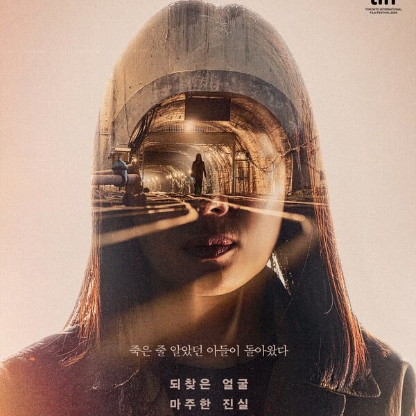
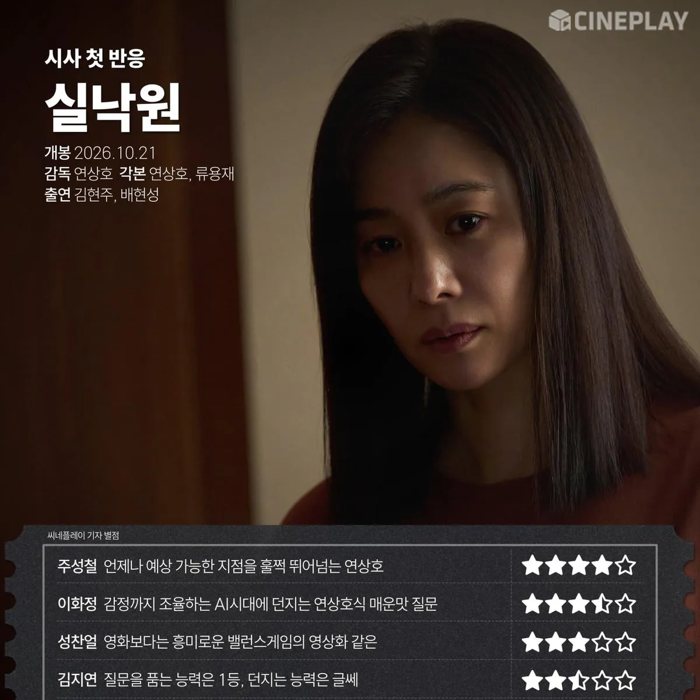
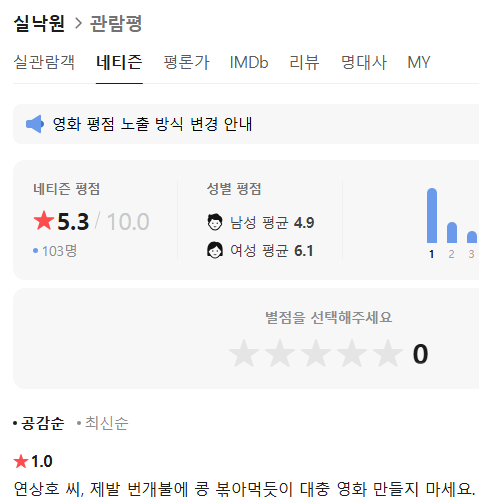

나는 연상 별로 연하호 데려와
연하호 는 없소?
필모가 늘어날수록 믿고 거르는 감독이 되어가는
진짜 영화, 시리즈로 이만큼 다작하는거 대단하긴 하네
난 얼굴 군체 재밌게 봤는데 연상호 작품이다 그러면 거품 무는애들 한트럭있네 ㅋㅋㅋ 근데 확실히 이양반은 영화보다 차라리 드라마로 가는게 더 나을거같긴함
애니할때는 인정 연상호가 영화나 시리즈를 잘한적이 없는데 무슨 부산행도 그냥 좀비영화 클리셰에 말도안되는 신파 넣고 닝기리 지옥도 소재가 참신 한거지 연출력도 각본도 참 위에도 누가썼던데 기기괴괴보다 용감한거 빼고 없음 반박시 니말맞
쌍판 너무 재밌게 봐서 난 좋았음. 이것도 평론가 평점 높은거같은데?